Ordinary Differential Equations¶
Finite Difference Formulas¶
We define the backward difference operator 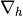 by:
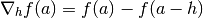
Repeated application gives:
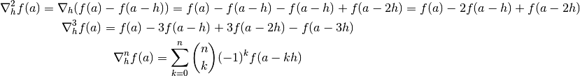
We can also derive a formula for 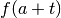 where  is any real number,
independent of
is any real number,
independent of  :
:
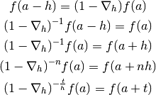
Now we can express the following general integral using the function value from
either left (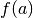) or right (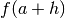) hand side of the interval :
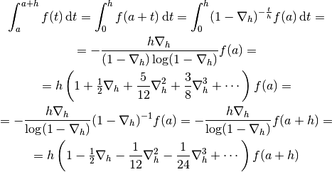
Code:
>>> from sympy import var, simplify, integrate
>>> var("nabla t h")
(nabla, t, h)
>>> s = integrate((1-nabla)**(-t/h), (t, 0, h))
>>> simplify(s)
h*nabla/(-log(1 - nabla) + nabla*log(1 - nabla))
>>> s.series(nabla, 0, 5)
h + h*nabla/2 + 5*h*nabla**2/12 + 3*h*nabla**3/8 + 251*h*nabla**4/720 + O(nabla**5)
>>> s2 = s*(1-nabla)
>>> simplify(s2)
-h*nabla/log(1 - nabla)
>>> s2.series(nabla, 0, 5)
h - h*nabla/2 - h*nabla**2/12 - h*nabla**3/24 - 19*h*nabla**4/720 + O(nabla**5)
Keeping terms only to third-order, we obtain:
![\int_a^{a+h} f(t) \,\d t
= - {h\nabla_h\over (1-\nabla_h) \log(1-\nabla_h)}f(a)
\approx h \left(1+\half\nabla_h + {5\over 12}\nabla_h^2+{3\over8}
\nabla_h^3\right) f(a)
=
= h f(a) + h\half\left(f(a)-f(a-h)\right)
+h{5\over 12}\left(f(a)-2f(a-h)+f(a-2h)\right)+
+h{3\over8}\left(f(a)-3f(a-h)+3f(a-2h)-f(a-3h)\right)
=
= h\left(1+\half+{5\over12}+{3\over8}\right)f(a)
-h\left(\half+{2\cdot5\over12}+{3\cdot3\over8}\right)f(a-h) +
+h\left({5\over12}+{3\cdot3\over8}\right)f(a-2h)
-h\left({3\over8}\right)f(a-3h)
=
= h{55\over24}f(a) -h{59\over24}f(a-h) +
h{37\over24}f(a-2h) -h{3\over8}f(a-3h)
=
= {h\over24}\left(55f(a) -59f(a-h) + 37f(a-2h) -9f(a-3h)\right)](../../_images/math/f44e719ee5ba68707df1cb69bcb0c726f205beaf.png)
Similarly:
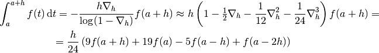
Code:
>>> from sympy import var
>>> var("f0 f1 f2 f3")
(f0, f1, f2, f3)
>>> nabla1 = f0 - f1
>>> nabla2 = f0 - 2*f1 + f2
>>> nabla3 = f0 - 3*f1 + 3*f2 - f3
>>> 24*(f0 + nabla1/2 + 5*nabla2/12 + 3*nabla3/8)
-59*f1 - 9*f3 + 37*f2 + 55*f0
>>> 24*(f0 - nabla1/2 - nabla2/12 - nabla3/24)
f3 - 5*f2 + 9*f0 + 19*f1
Integrating ODE¶
Set of linear ODEs can be written in the form:
(1)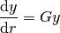
For example for the Schrödinger we have
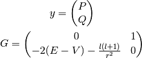
Now we need to choose a grid 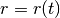, where is some uniform grid. For
example 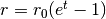:
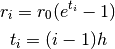
where 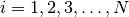. We also need the derivative, for the exampe above we get:
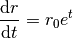
Now we substitute this into (1):
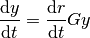
We can integrate this system from  to 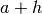 on a uniform grid 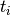:
to 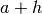 on a uniform grid 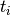:
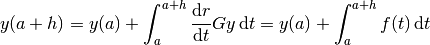
where 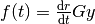 and we use some method to approximate the integral, see the previous section.
Radial Poisson Equation¶
Radial Poisson equation is:
(2)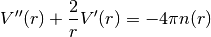
The left hand side can be written as:
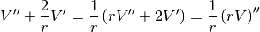
So the Poisson equation can also be written as:
(3)
Now we determine the values of 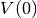, 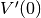 and the behavior of
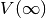 and 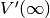. The equation determines  up to an
arbitrary constant, so we set 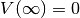 and now the potential is
determined uniquely.
up to an
arbitrary constant, so we set 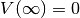 and now the potential is
determined uniquely.
The 3D integral of the (number) density is equal to the total (numeric) charge, which is equal to  (number of electrons). We can then use the Poisson equation to rewrite the integral in terms of :
(number of electrons). We can then use the Poisson equation to rewrite the integral in terms of :
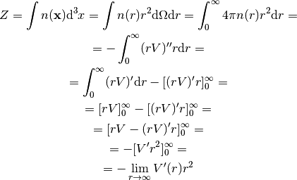
So in the limit  , we get the equation:
, we get the equation:
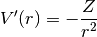
by integrating (and requiring that vanished in infinity to get rid of the
integration constant), we get for :
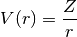
Integrating (3) directly, we get:
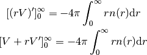
We already know that  behaves like 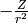 in infinity,
so 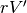 vanishes. Requiring itself to
vanish in infinity, the left hand side simplifies to 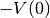 and we get:
behaves like 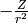 in infinity,
so 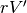 vanishes. Requiring itself to
vanish in infinity, the left hand side simplifies to 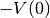 and we get:
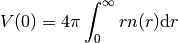
Last thing to determine is . To do that, we expand the charge density and potential (and it’s derivatives) into a series around the origin:
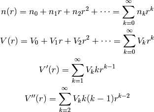
And substitute into the equation (2):
![\sum_{k=2}^\infty V_k k(k-1) r^{k-2} +
{2\over r}\sum_{k=1}^\infty V_k k r^{k-1} =
-4\pi \sum_{k=0}^\infty n_k r^k
\sum_{k=2}^\infty V_k k(k-1) r^{k-2} + {2\over r} V_1 +
{2\over r}\sum_{k=2}^\infty V_k k r^{k-1} =
-4\pi \sum_{k=0}^\infty n_k r^k
\sum_{k=2}^\infty V_k k(k-1) r^{k-2} + {2\over r} V_1 +
\sum_{k=2}^\infty 2V_k k r^{k-2} =
-4\pi \sum_{k=0}^\infty n_k r^k
{2\over r} V_1 +
\sum_{k=2}^\infty V_k k\left((k-1) +2\right)r^{k-2}
=
-4\pi \sum_{k=0}^\infty n_k r^k
{2\over r} V_1 +
\sum_{k=2}^\infty V_k k(k+1)r^{k-2}
=
-4\pi \sum_{k=0}^\infty n_k r^k
{2\over r} V_1 +
\sum_{l=0}^\infty V_{l+2} (l+2)(l+3)r^l
=
-4\pi \sum_{k=0}^\infty n_k r^k
{2\over r} V_1
=
-\sum_{k=0}^\infty \left(4\pi n_k+V_{k+2} (k+2)(k+3)\right) r^k](../../_images/math/ca9923dd958ca74a827a47098b69e474215b3362.png)
We now multiply the whole equation by  and then set 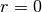. We get
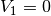, so 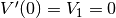. We put it back into the equation to get:
and then set 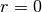. We get
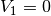, so 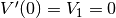. We put it back into the equation to get:
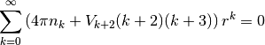
This must hold for all , so we get the following set of equations for 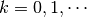:
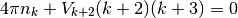
from which we express 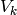 for all 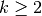.
We already know the values for  and
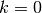 from earlier, so overall we get:
and
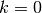 from earlier, so overall we get:
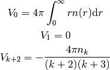
in particular:
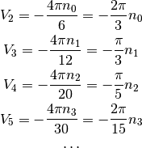
So we get the following series expansion for and :
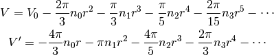
Analytic Testing Example¶
Good analytic testing solution, that satisfies the asymptotic relations is:
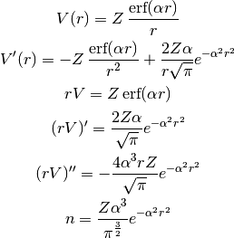